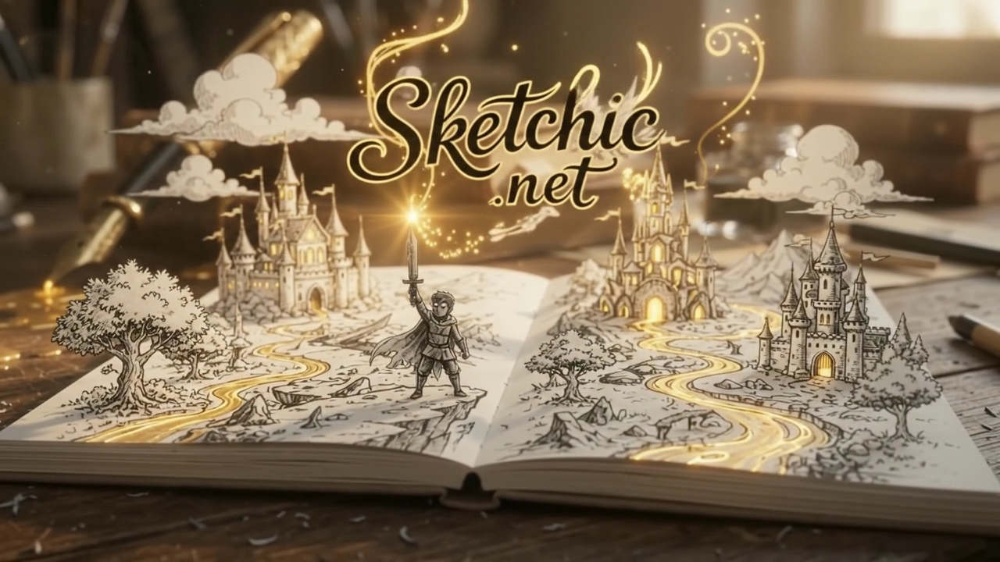
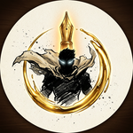

حارس الممحاة The Eraser's Edge
في مرسم فنان مهجور تغمره شمس الغروب، يستيقظ محارب صغير مرسوم بالحبر الأسود ليكتشف أن "ضباب الممحاة" يبتلع عالمه الورقي، فيقفز إلى سطح الطاولة الحقيقي بحثاً عن القلم الذهبي.

عالم سينمائي هجين يجمع بين الرسومات اليدوية ثنائية الأبعاد (الحبر، الفحم، والألوان المائية) والبيئات الواقعية الملموسة — حيث تحافظ كل خامة على روحها الأصلية تحت إضاءة الغروب والفوانيس.
اختر بين النسخة السينمائية الكاملة (16:9) أو نسخة الشورتس العمودية (9:16) للمشاهدة الفورية داخل المشغّل.
في مرسم فنان مهجور تغمره شمس الغروب، يستيقظ محارب صغير مرسوم بالحبر الأسود ليكتشف أن "ضباب الممحاة" يبتلع عالمه الورقي، فيقفز إلى سطح الطاولة الحقيقي بحثاً عن القلم الذهبي.
في مدينة حجرية باهتة الألوان، تكتشف مستكشفة أن رسوماتها على الأوراق الشفافة تتحول إلى بوابات ثلاثية الأبعاد أمام ضوء الشمس، فتعبر خلف طائرتها الورقية إلى عالم السماء المخططة.
في بلدة حجرية ليليّة مضاءة بالفوانيس، تنفصل الظلال عن أصحابها وتتحول إلى مخلوقات حبرية متمرّدة تهرب نحو البرج الممزق، فينطلق رسّام الخرائط مع ثعلب الفحم المرسوم لاستعادة ظلّه قبل الفجر.
ثلاث قواعد بصرية وسردية تحكم كل مشهد يتم إنتاجه داخل عالم Sketchic Universe.
تلتقي الرسومات ثنائية الأبعاد (الحبر، الفحم، الألوان المائية، الورق) مع البيئة السينمائية الواقعية دون أن تذوب خامة الرسم في الواقع؛ كل عنصر يحافظ على ملمسه الأصلي مع تفاعل حقيقي مع الضوء والظل.
الأقلام، الأوراق الشفافة، الفوانيس، والممحاة ليست مجرد ديكور خلفي — بل هي أدوات خلق ومواجهة وبوابات عبور حقيقية تحرك مسار القصة وتحدد مصير الأبطال.
الصراع في سكتشيك بصري وخيالي خالص ضد قوى المحو، الفقدان، أو بهتان الألوان — يُعبَّر عنه بتمزق الورق، زحف ضباب الممحاة، أو تمرد الظلال، دون أي عنف دموي.
الشخصيات والأدوات المعتمَدة في Google Flow للحفاظ على الاتساق البصري عبر جميع المشاهد.
محارب صغير بطول إصبع مرسوم بالحبر الأسود والفحم، يرتدي عباءة ورقية ممزقة الحواف ويحمل سيفاً من سنّ قلم حبر رفيع، بعينين متوهجتين بلون أبيض دافئ.
قلم حبر عتيق ضخم من النحاس والذهب المنقوش يتكئ على كتب جلدية، يتوهج سنه بنور كهرماني دافئ يفيض بالحبر المضيء لإعادة رسم العالم.
موجة زاحفة من الغبار الرمادي البارد وفتات الممحاة المطاطية، تمحو خطوط الحبر والألوان وتحوّل كل ما تلمسه إلى بياض ورقي فارغ.
شابة ترتدي معطفاً قماشياً ونظارات طيران نحاسية فوق أسطح مدينة حجرية باهتة، ترفع دفترها الشفاف أمام أشعة الشمس لتفتح بوابات السماء.
أوراق رسم شفافة تحمل خطوط حبر هندسية ولمسات ألوان مائية؛ بمجرد مرور ضوء الشمس خلالها تتحول الرسومات المسطحة إلى عمق ثلاثي الأبعاد.
طائرة ورقية مطوية من ورق كريمي وخطوط حبر هندسية وضربات ألوان مائية فيروزية وذهبية تحلق وسط الغيوم مخلفة ذيلاً من الحبر المضيء.
رسّام خرائط شاب يرتدي معطفاً صوفياً داكناً وحقيبة جلدية، يحمل فانوساً نحاسياً دافئاً في شوارع الحجر الرطبة بحثاً عن ظله المفقود.
ثعلب رشيق مرسوم بالفحم الأسود وخطوط بيضاء متوهجة، يتحرك على الجدران والأرضيات الحجرية الحقيقية كظل حيّ.
برج جرس قوطي حجري شاهق يتمزق جزؤه العلوي في سماء الليل الضبابية ليتحول إلى رسومات حبر مسطحة وطيور ظلّية دوّارة.


Official Brand Identityتُنتج أفلام Sketchic Universe عبر خطوط إنتاج Google Flow السينمائية باستخدام بطاقات الشخصيات والأدوات المرجعية (Ingredients) لضمان وحدة الأسلوب، الإضاءة، وملمس الرسم اليدوي في كل لقطة.